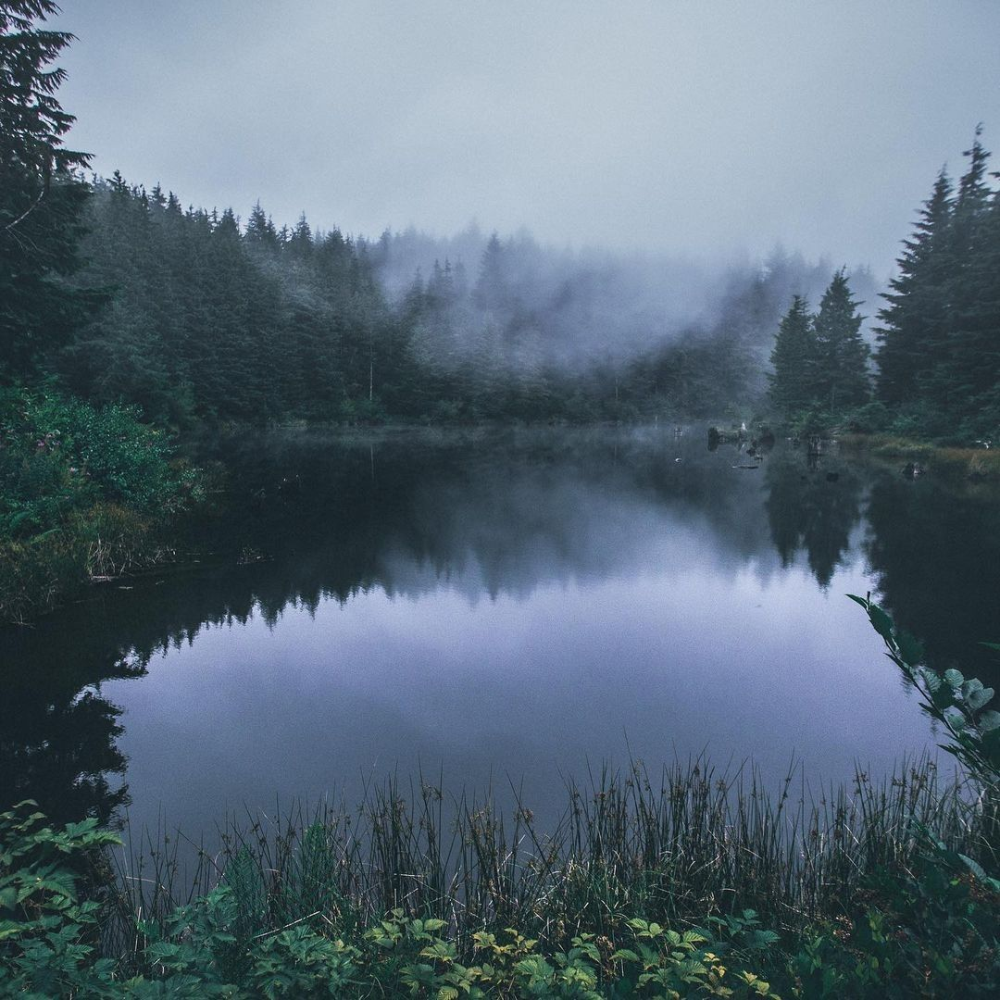

Lake of the Lost Souls
Taking the safe path you are brought to a large lake with water so
dark you cant see within. You can see that the townspeople have been
here possibly several times before. Theres a small dock for fishing.
Off to the side you see a bell hanging on a pole. Theres nothing
here that seems to have any info on an artifact. But there is a sign
nailed into the pole. It reads; "Ring the bell and hear its toll.
We dont get to pick our role. Let this night be made whole, before
we are made into its goal."

Theres nothing here for you but the curiosity itches at your brain.
What does the sign mean? What happens when I ring this bell? What
role are people taking? Do you let your curiosity steer you or do
you focus on your task and return to try another path?
What do you do? Do you return or will you hear the bells toll?
Return.
Ring the bell.